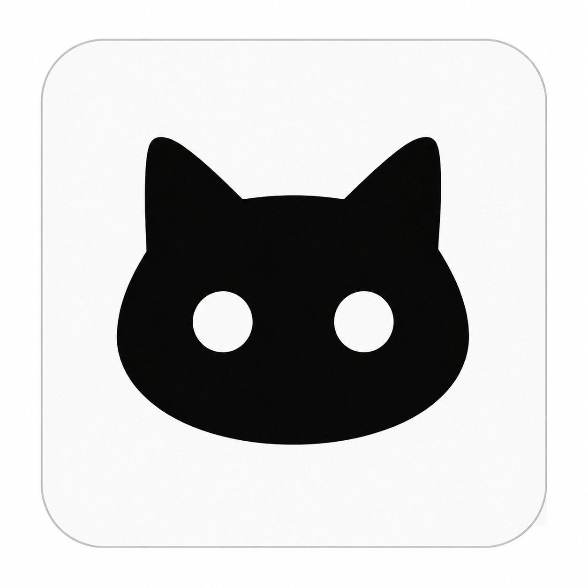
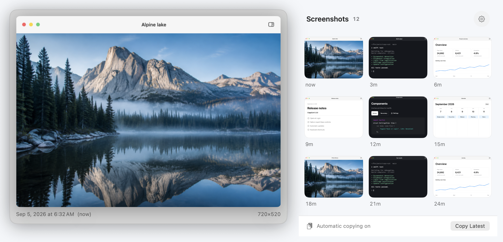
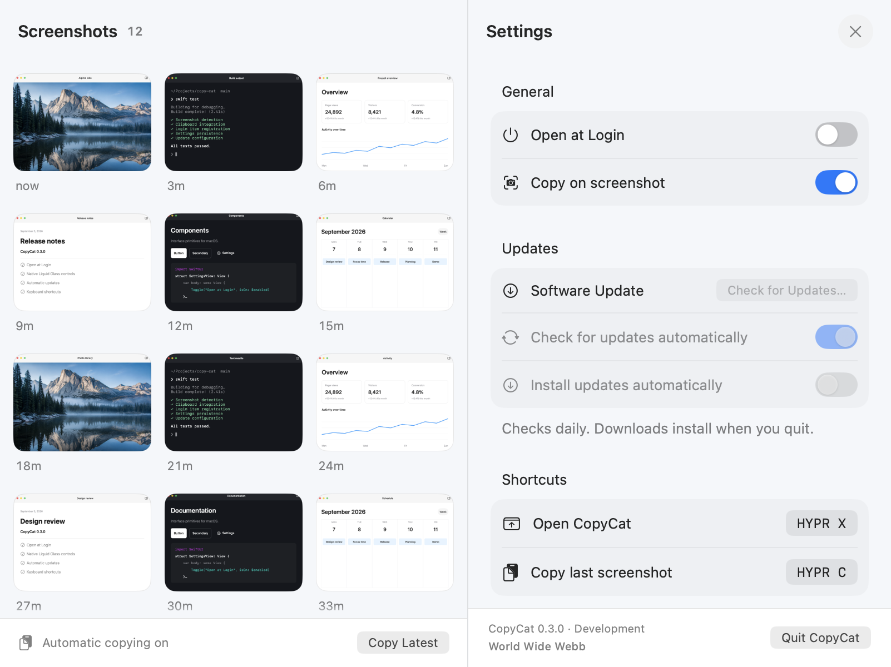

Capture. Copy. Paste.
New screenshots go straight to your clipboard. The original files stay where macOS saves them.

CopyCatTake a screenshot. Paste it anywhere.
Find your recent captures right in the menu bar.

New screenshots go straight to your clipboard. The original files stay where macOS saves them.
Click to copy. Hover to preview. Right-click to find the original. All from your menu bar.
No account or cloud uploads. CopyCat reads your screenshot folder and leaves your files alone.
Ready when you sign in, without another Dock icon.
Check for a new version anytime, or download and install updates automatically.
Choose your keys for the library and your latest screenshot.
Native controls on macOS 26, with light and dark appearance.

Current GitHub builds are ad-hoc signed, not Apple-notarized. If you trust the download, attempt to open it, then go to System Settings → Privacy & Security → Open Anyway.